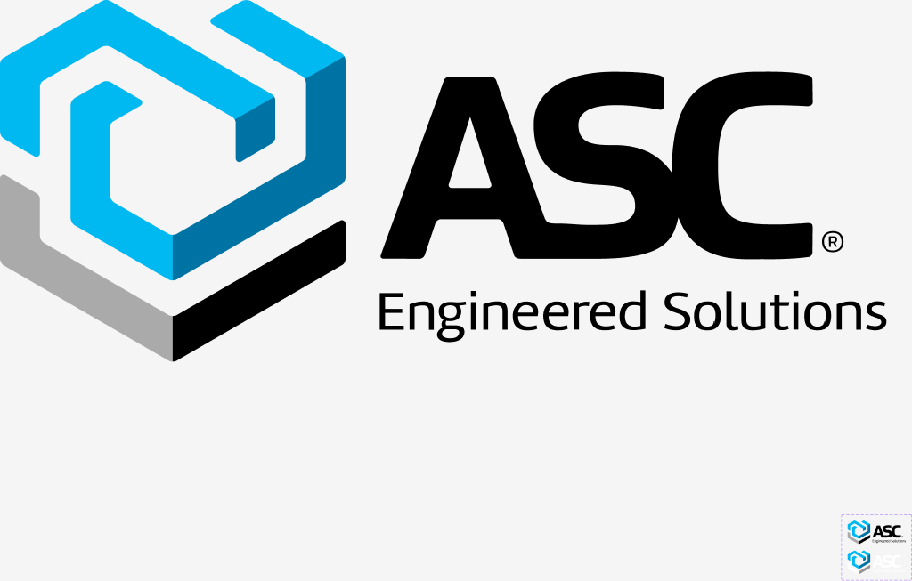

ASC → Reliable Safety & Flow Corporation (RSFC)
A comparison of the approved RSFC brand sources — the At-A-Glance Style Guide (August 2026) and the
Final Logos delivery — against the RSFC migration inventory, the Hydra Ant Design — DS Figma file, and the
on-hydra-app-prototype repository. Every item is classified Keep, Change, Add, Remove, or
Needs verification. Primitive, semantic, and component-token changes are kept in separate categories throughout.
Nothing in Figma or the repository was modified.
✓ Revision 2 — now based on the approved brand sources, not a summary of them
The first pass of this audit derived every RSFC requirement from the migration inventory's paraphrase of the brand guide. The guide and the logo package have since been supplied and read directly. That closed the largest verification gap (V5) and changed several conclusions outright. In particular: the approved palette is more than twice the size the inventory described, the logo delivery resolves the mark-only blocker that was recorded as client-blocked, and the delivered artwork does not fully agree with the hex values printed in the guide. Findings that changed are marked Rev 2.
01Executive summary
The RSFC rebrand is much smaller on the color primitive layer than expected, considerably larger on the typography layer than the migration document implies, and larger again on the brand-asset layer now that the approved sources have been read. Two of the nine approved brand colors are already live and correct in both Figma and code. Typography, by contrast, cannot be delivered by editing values — it needs new structure in both systems. And the logo is not one asset swap but a three-lockup, four-variant matrix against a component set built for two.
fontFamily variable = Cairo. RSFC needs Barlow and Barlow Condensed.Logo set has 2 variants and one lockup.src/What the audit concluded
- The color primitives are in far better shape than the document assumes. RSFC Orange is exactly
Volcano/volcano-6(#F05A23) and RSFC Navy is exactlyPrimary/primary-7(#004173) — verified byte-for-byte in Figma and insrc/theme/. The whole Volcano ramp and the entire Ant Design standard palette need no change at all. - The one genuinely hard color problem is structural, and the document does not describe it. The document asks to keep
#004173 while remapping #0073A5 and #00B9F0. All three are steps of the same
Primary/primary-*ramp (7, 6 and 4). They cannot be treated as independent decisions. See Finding 1. - Typography is the largest and most underestimated workstream. Cairo → Barlow is a value swap, but "Barlow Condensed ExtraBold headings" and "Barlow Condensed Bold subheadings" require a second font-family variable, two new weight values, a new subheading semantic role that exists in neither system, and a workaround for the fact that Ant Design has no heading-font token. See Finding 2.
- The logo is not tokenized. The Figma
Logocomponent set returns no variable bindings, and the repo SVGs carry hardcoded ASC fills. Replacing brand colors in tokens will not change the logo — the artwork must be swapped as an asset in both places. - Rev 2 The mark geometry survives the rebrand — only its colors and wordmark change. The approved RSFC artwork keeps the same interlocking cube as ASC, recolored from cyan/blue to Light Blue, Navy and Gray, with the wordmark replaced. This is the single most reassuring finding in the audit: silhouette, favicon shape, and collapsed-rail recognition all carry over. See §6.
- Rev 2 The mark-only blocker is resolved — an approved Logomark exists. The migration inventory recorded
this as client-blocked with no approved asset. The delivery contains a dedicated
LogomarkTMlockup at an effectively square 0.98 : 1, which is exactly what the collapsed navigation rail and a favicon need. That P0 no longer needs a client request. - Rev 2 The horizontal logo is 76 % wider than the asset it replaces, and that is a layout problem. ASC is 2.45 : 1; RSFC Horizontal is 4.31 : 1. Dropped into the existing sidebar header band at the same height it will need far more horizontal room than the 256 px expanded sidebar provides. See Finding 6.
- Rev 2 The delivered artwork disagrees with the guide it ships with. The guide prints Gray as #A7A9AC; every delivered SVG uses #A8A9AC. The near-black appears as three different values across files, and the Reverse variant introduces two blues that appear nowhere in the palette. Do not seed tokens from the SVGs. See Finding 7.
- Rev 2 Two brand elements exist in the guide that exist in neither Figma nor the repository. The Angle Graphic (fixed 30°, capped at 20 % of the space) and the Accent Bar (thin orange or navy rule, vertical or horizontal) are named, specified, recurring brand devices. They are net-new design-system work that the migration inventory never mentions. See §12b.
- One document instruction does not apply to this repository. The inventory asks to "change token values before renaming
internal
ASCtoken identifiers." This repo has zero ASC-named tokens, CSS variables, or theme exports — everything ishydra*/--hydra-*. That cleanup task is already satisfied here. See Finding 4. - Icons, spacing, radii, shadows, and all interaction-state machinery are brand-neutral and require no rebrand work. They are Ant Design derived and carry no ASC identity.
⚠ The biggest blocker is not design work — it is a missing decision
RSFC Light Blue #2576BB is confirmed by the guide as a co-equal primary anchor — one of four colors that
"take visual dominance over all other colors" — yet it exists in no ramp in either system and neither the guide nor the inventory assigns
it a UI semantic role. Because the legacy interactive blues being retired (#0073A5,
#00B9F0) are the current colorPrimary and colorLinkHover, no primitive or semantic color
work can safely start until that role is defined. This is the single highest-leverage unblock available.
Rev 2 Reading the guide raised the stakes on this decision rather than settling it. Light Blue #2576BB is the dominant color of the logo mark itself, which makes leaving it outside the token system harder to justify than when it looked like a fourth-place collateral color.
02Method & verification basis
Rev 2 Five sources were compared. The At-A-Glance Style Guide and the Final Logos package are now treated as the authoritative source of truth for RSFC requirements; the migration inventory is treated as the source of truth for migration intent and sequencing; Figma and the repository were inspected directly for current state.
ⓘ Why the source hierarchy matters
Where the guide and the inventory disagree, the guide wins — it is the approved client artefact and predates the inventory (August 2026 vs 2026-09-14). Where the guide and the delivered artwork disagree, neither is automatically authoritative: those conflicts are recorded as open items in Finding 7 rather than silently resolved, because picking one would bake an unapproved value into the foundations.
| Source | Identity | Access | Confidence |
|---|---|---|---|
| Brand guide authoritative |
RSFC At-A-Glance Style GuideRSFC_AAG_Guideline_Final.pdf · dated AUGUST 2026 · 2 pages |
Read in full — verbal identity, typography, logo usage, brand colors, graphic elements | Fully read |
| Logo package authoritative |
Final LogosFinal Logos.zip · 179 files · assets dated 2026-09-10 |
Extracted and inspected — every RGB SVG parsed for viewBox and fill values; rasters measured; artwork rendered and viewed |
Fully read |
| Migration inventory | MASTER — ASC to RSFC Migration Inventory Page 2269249539, version 3, 2026-09-14 |
Read in full via Confluence | Fully read |
| Figma design system | Hydra Ant Design — DS fileKey 3ghYBXR6XVUEaeBo3D5E4q |
Official Figma MCP — get_metadata, get_variable_defs, get_design_context, get_screenshot |
Partial — see below |
| Application repository | on-hydra-app-prototypeReact 19 · antd 6.3.5 · Vite |
Full read of src/theme/, brand assets, and an exhaustive ASC sweep across src/ |
Fully read |
Rev 2 What was verified from the approved brand sources
- Typography, fully specified. Brand font Barlow ("Barlow Superfamily", available on Google Fonts and Adobe Fonts); headers Barlow Condensed ExtraBold; subheaders Barlow Condensed Bold; body copy Barlow; the master signature set in Barlow Regular. Office-safe substitute Calibri, scoped to surfaces "where we DON'T control the users execution" — PowerPoint, Word, Excel, email body copy and email signatures. Brand fonts apply "everywhere we control the rendering/production: website, print collateral, video, social graphics, branded PDFs."
- Eleven brand colors in four tiers, with RGB, CMYK and — for the primaries — Pantone references. Plus two tint levels (55 %, 15 %) and a dark Shade. Full table in §8.
- Logo usage rules. Full-color on solid white or very light backgrounds ("10 % black tint or lighter"); reversed or white on solid darker backgrounds; the note "can be placed over the darkest blue at a large scale only".
- Two named graphic devices — the Angle Graphic and the Accent Bar — with usage constraints. See §12b.
- Verbal identity — master signature, tagline, elevator pitch, voice and tone, an explicit do/don't list, and one explicitly retired tagline. See §7.
- Every RGB SVG in the logo package — 10 files across 3 lockups — parsed for geometry and fill values, and the Primary, Reverse and Logomark artwork rendered and visually inspected.
What was verified live in Figma during this audit
Typography/Font Family/fontFamily=Cairo— read from bound nodes in both light and dark documentation frames.Typography/Font Weight/fontWeightNormal=400,fontWeightStrong=600. No other weight variables were returned.Typography/Font Size/*andLine Height/*forfontSize14/22,fontSizeSM12/20,fontSizeHeading420/28.- Text styles
Title/Heading 4,Base/Normal,Base/Strong,Small/Normal,Small/Strong— each binds its family to the singlefontFamilyvariable, with styleRegularorSemiBold. - Complete
Volcano/volcano-1…10ramp, Light and Dark. - Complete
Daybreak Blue/blue-1…10,Sunset Orange,Gold,Yellow,Lime,Green,Cyan,Geek Blue,Purple,Magenta,Dust Redramps, Light and Dark. - Neutral ramp
gray-1…gray-13(#ffffff → #000000). Color/Neutral/Text/*semantic values for light and dark.- The
Logopage (767:62211), theLogocomponent set (742:78271), its two variants, its rendered artwork, and its variable bindings.
ⓘ Verification limit — stated explicitly rather than hidden
Figma MCP enumerated only two top-level pages (🖼 Cover, Logo); the 🌈 Colors canvas was reachable directly.
No node on the reachable pages binds the Primary/primary-* ramp or the Customize Theme collection, so those values
could not be re-read live in this session.
For those specific items this audit relies on Documentation/hydra-tokenization-parity-audit.md (dated 2026-04-07), which
records a full variable-level extraction of that file. Every claim resting on that document alone is labelled
Needs verification and listed in §22. Treat those as documented, not freshly confirmed.
Out of scope by instruction
No redesign, no implementation, no edits to Figma or the repository. Non-design ASC surfaces named in the inventory — email domains, Revit add-in identity, Azure B2C, analytics cohorts, auth provisioning, legal and privacy URLs — are acknowledged where they touch design decisions but are not audited here.
03Overall migration status
Counted by design-system item (primitive ramp, semantic group, token, text-style family, asset class) rather than by file, so that one propagating source is not counted many times.
| Category | Status | Figma | Repo | Headline |
|---|---|---|---|---|
| Logo & brand marks | Change Add | ASC artwork | ASC artwork | Both sides still ASC. Variant API is reusable as-is. Mark-only asset for collapsed nav does not exist anywhere. |
| Brand naming (copy) | Change | Not audited here | 340 hits / 74 files | Largest volume item. Needs the full-name vs abbreviation rule before any sweep. |
| Primitive colors | Keep Verify | Verified live | Verified | Volcano and all Ant Design standard ramps: no change. Only the blue Primary ramp is in question. |
| Semantic color tokens | Change Verify | Role undefined | Role undefined | This is where the real rebrand happens. Blocked on the Light Blue role decision. |
| Component color tokens | Keep Change | Aligned | Aligned | Button is already RSFC Orange. Menu, Layout and Sidebar inherit the blue ramp and follow whatever it becomes. |
| Font families | Change Add | Cairo, single var | Cairo, single const | Swap body family, then add a second condensed family. Neither system can express two families today. |
| Font weights | Add | 400 / 600 only | 400 / 600 only | 700 and 800 must be introduced. The shared 600 constant must be split first. |
| Font sizes & text styles | Keep | Verified live | Verified | Scale is Ant Design derived and brand-neutral. Rebind families and weights; do not touch metrics. |
| Icons | Keep | Ant Design set | @ant-design/icons |
Single brand-neutral source. No ASC iconography exists. |
| Illustrations & imagery | Verify | Not audited here | 18 raster assets | Product photography is brand-neutral in principle; not pixel-inspected. One hero gradient bypasses tokens. |
| Backgrounds & surfaces | Keep | Neutral | Neutral | Layout surfaces resolve from the neutral gray ramp, not brand color. |
| Borders, radii, spacing | Keep | Ant Design | Derived tokens | Generated by the Ant Design algorithm. Zero brand identity. |
| Shadows & elevation | Keep | Neutral + orange | Neutral + orange | Global shadows are black-alpha. The one tinted shadow is already RSFC Orange. |
| Interaction states | Change | Inherits primary | Inherits primary | No state machinery changes. States shift only because they consume the primary ramp; contrast must be re-validated. |
| Components | Keep | Unmodified | Unmodified | No component structure or variant API changes anywhere in the rebrand. |
| App metadata & favicon | Add Verify | No asset set | None exists | There is no favicon or manifest to rebrand. Title is BOM. Blocked on the client icon set. |
04Critical findings
Five findings change how the migration should be sequenced. Each is a conclusion drawn from comparing the three sources, not a restatement of the inventory.
Finding 1 · The three blues are one ramp, not three decisions Change Needs verification
The inventory contains two instructions that are individually reasonable and jointly unsatisfiable as written:
- "Keep existing values that already match RSFC … Verified examples: sidebar Navy
#004173" - "Remap legacy interactive blues such as
#0073A5and#00B9F0through the shared token system"
All three hexes are adjacent steps of a single generated ramp:
Step 6 is the seed. If the ramp is reseeded on a new RSFC blue, step 7 will no longer be #004173 and the "keep the sidebar navy" instruction breaks silently. Conversely, if the ramp is frozen to protect step 7, steps 4 and 6 cannot be remapped inside it. Three mutually exclusive strategies exist, and the choice is a design-system decision that must be made before any token edit:
- Reseed the ramp on the new RSFC blue and accept that Navy becomes an explicitly pinned value or moves to a different step.
- Freeze the ramp as a legacy primitive and repoint only the semantic aliases (
Color/Primary/*) at different steps or at a new ramp. - Split the ramp into a navy ramp and an interactive-blue ramp, which is the cleanest but is net-new primitive structure.
Where: Figma Colors → Primary/primary-* and Customize Theme → Color/Primary/*; repo
src/theme/primaryPrimitiveBlue.ts. Risk: a blind hex replacement silently changes the sidebar, all links, the top bar,
selected table rows, and every ghost primary button at once.
Finding 2 · RSFC typography needs new structure, not new values Add
The inventory frames typography as three checklist lines. Verified against both systems it is the largest structural change in the rebrand. Figma today exposes exactly one font-family variable and two weight variables:
| Current variable (verified live) | Value | RSFC consequence |
|---|---|---|
Typography/Font Family/fontFamily | Cairo | Change to Barlow — and it is the only family slot, so headings cannot differ from body |
Typography/Font Weight/fontWeightNormal | 400 | Keep |
Typography/Font Weight/fontWeightStrong | 600 | Keep for body strong — but it is also what every heading uses today |
| No condensed family variable exists | Add a second family variable for Barlow Condensed | |
| No weight 700 exists | Add — required for RSFC subheadings (Bold) | |
| No weight 800 exists | Add — required for RSFC headings (ExtraBold) | |
| No subheading semantic role exists | Add — the role is absent from Figma and the repo | |
Two consequences that are easy to miss:
- The weight constant must be split before headings can move. In
src/theme/hydraTypography.tsa singleW_SEMI = 600is shared byTitle/Heading 1–5and byBase/Strong,Small/Strong,Large/Strong,Extra Large/Strong. Setting headings to 800 without splitting it would also bold every inline strong text in the product. - Ant Design has no heading-font token.
theme.tokenexposesfontFamilyandfontFamilyCode, and nothing else. A different heading family therefore cannot be delivered through the token pipeline at all — it needs either CSS on the typography elements or per-component overrides. This is an architectural decision, not a token edit, and it is the item most likely to produce inconsistent results across surfaces.
Where: Figma Typography collection and all Title/* text styles; repo
src/theme/hydraTypography.ts, src/theme/hydraAntdTypography.ts, index.html, src/index.css.
Finding 3 · The logo is not connected to the token system Remove Add
get_variable_defs on the Figma Logo instance returns an empty set — the artwork carries raw fills with no
variable bindings. The repo SVGs mirror this with hardcoded ASC hexes:
| Asset | Size | Embedded fills | Token-bound? |
|---|---|---|---|
Mode=On_White 742:78272 | 185.897 × 75.85 | Flattened vector — no bindings | No |
Mode=On_Dark 742:78280 | 185.897 × 75.85 | Flattened vector — no bindings | No |
public/assets/brand/asc-logo/On_White.svg | 186 × 76 | black · #00B9F0 · #0073A5 · #AAAAAA | No |
public/assets/brand/asc-logo/On_Dark.svg | 186 × 76 | white · #00B9F0 · #0073A5 · #949594 | No |
Two implications. First, token work will not move the logo — remapping #0073A5 and #00B9F0 in the theme leaves both logos visually unchanged, so they must be treated as an asset replacement workstream in their own right. Second, the logo is a fifth and sixth independent instance of the retired ASC blues, outside the ramp and outside the theme, and a reverse audit that only greps the theme layer will miss them.
Also confirmed: the repo defines onLight in src/assets/brand/ascLogoUrls.ts but never renders it —
only onDark is consumed. The light variant is dead code today.
Finding 4 · One inventory instruction does not apply to this repository Keep
The inventory asks Engineering to "change token values before renaming internal ASC token identifiers … so broken
CSS-variable references do not get mixed with visual changes."
Verified across the whole repo: there are no ASC-named tokens, no --asc-* CSS variables, and no ASC-named theme
exports. Every token, module, and CSS variable is hydra* / --hydra-*. The risk that instruction guards against
does not exist here, and sequencing work around it would be wasted effort in this codebase.
What does carry ASC in its name is a separate and lower-risk class: 10 filenames (ascBrowserProducts.ts,
BomAscProductsPage.tsx, AscProductsDrawer.tsx, specAscSubstitutionSeed.ts,
ascSkuVariants.ts, BomAscFigureLink.tsx, bomAscCatalogPartDetail.ts,
BomAscCatalogPartDetailPage.tsx, BomAliasConfigurator.tsx, ascLogoUrls.ts), a set of exported symbols
(ASC_DEST_FIELDS, AscCatalogPart, SpecAscMaster, mockAscParts, …), and route segments
(/bom/projects/:id/asc-products, ?mode=asc). None of these are visual branding, none are user-visible, and
the inventory's own "intentionally preserved" list supports deferring them. Recommend a deliberate, separate refactor — not part of the
brand cutover.
Note that the instruction remains valid for the wider ConnectED estate; it simply has no target in this repository.
Finding 5 · A pre-existing Figma ↔ repo divergence becomes a rebrand risk Needs verification
Informational color is already wired differently in the two systems, per the recorded parity audit:
- Figma:
Customize Theme → Color/Info/*aliases still point atPrimary/primary-*. - Repo:
blueInfoSemanticsmapscolorInfo*toDaybreak Blue/blue-*(Ant Design blue), soAlert type="info"is #1677FF-based.
This divergence is harmless today because both happen to be blue. It stops being harmless the moment the Primary ramp is reseeded. Figma's informational states would drift to RSFC navy while the running application keeps Ant Design blue, and the two systems would disagree on every info Alert, notification, and informational badge — a difference that visual QA would attribute to implementation error rather than to token wiring.
Resolved 2026-09-17. Closed Figma Color/Info/* was rebound to Daybreak Blue/blue-*,
matching the repo in both Light and Dark. The predicted drift had already appeared: a full-file scan found 418 nodes consuming Color/Info/*,
of which Radio (42) had used colorInfoText for its Radio.Button label, where Ant Design uses colorPrimary.
Those were rebound to Color/Primary/colorPrimary. See Documentation/hydra-tokenization-parity-audit.md §7.
Action: decide the intended informational color before touching the primary ramp, and reconcile both sides in the same pass. The inventory does not mention informational color at all; this is an audit-surfaced gap.
Finding 6 · The new horizontal logo does not fit where the old one sits Change Rev 2
The approved RSFC horizontal lockup is a substantially wider shape than the ASC asset it replaces. Measured from the delivered
viewBox values:
| Asset | Geometry | Aspect | Consequence |
|---|---|---|---|
| ASC — current, in use | 186 × 76 | 2.45 : 1 | Fits the sidebar header band today. |
| RSFC Horizontal | 303.54 × 70.44 | 4.31 : 1 | ~76 % wider at equal height. Will not drop in. |
| RSFC Wordmark | 232.45 × 60 | 3.87 : 1 | Monochrome only — no full-color RGB variant shipped. |
| RSFC Logomark | 66.8 × 68.2 | 0.98 : 1 | Effectively square. Ideal for the collapsed rail and favicon. |
The expanded sidebar is 256 px wide and the header band already carries padding plus the ConnectED product label. At the current rendered logo height the RSFC horizontal lockup needs roughly 76 % more horizontal space than is presently allocated. The realistic options are to reduce the logo height, re-lay-out the header band, or adopt the Wordmark lockup there instead — all of which are design decisions, not implementation details.
Why this is critical rather than cosmetic: the sidebar brand is the most visible single element in the application, and it renders on every screen. It is also the one place where a "simple asset swap" assumption breaks hardest — the file replaces cleanly and the layout silently degrades.
Action: treat the sidebar brand as a design task, not an asset replacement. Decide the expanded-state lockup (Horizontal vs Wordmark), and adopt the Logomark for the collapsed rail — which also fixes the pre-existing defect where the full ASC wordmark is rendered into the 72 px collapsed rail today.
Finding 7 · The delivered artwork contradicts the brand guide it ships with Needs verification Rev 2
The guide prints an exact hex for each brand color. The delivered SVGs do not consistently use those values. This was found by parsing every RGB SVG in the package rather than by trusting the guide:
| Color | Guide prints | Artwork contains | Assessment |
|---|---|---|---|
| Gray | #A7A9AC | #A8A9AC | Mismatch in the red channel (A7 vs A8). Present in every full-color SVG, so the artwork is internally consistent and the guide is the outlier — or vice versa. |
| Near-black | #231F20 | #231F20, #221E1F, #221F1F | Three different values across files. Primary/Logomark use the guide value; Black Horizontal mixes two; Black Wordmark uses a third. |
| Reverse blues | — | #2777BB, #13547F | Two blues that appear nowhere in the palette. The Reverse variant is not built from the documented colors. |
| Orange | #F05A23 | absent | See below — the guide's own provenance claim does not hold. |
The guide states the primary colors are "drawn directly from the logo." For Orange, that is not true. RSFC Orange #F05A23 does not appear in any delivered logo file. The logo is built from Navy, Light Blue, Gray and near-black only. Orange is a brand color, but it is not a logo color — worth knowing before anyone tries to derive the palette from the artwork.
The guide also contradicts itself on the dark Shade. It prints HEX #002A49 alongside RGB 0/65/115 — but
RGB 0/65/115 is #004173, the Navy. One of the two is wrong. The inventory flagged this item as
inconsistent without identifying the mechanism; this audit confirms it is a hex-vs-RGB contradiction inside the approved guide.
Action: do not seed design tokens from the SVG fills, and do not assume the guide is clean either. Get one authoritative value per color confirmed in writing, then treat the guide as canonical and have the artwork corrected to match. Seeding from artwork would put #A8A9AC and two undocumented blues into the design system permanently.
Finding 8 · The logo variant matrix is six times larger than the component set built for it Add Rev 2
Figma's Logo component set exposes a single Mode property with two values — On_White and
On_Dark. The approved delivery is a 3 × 4 matrix: three lockups (Horizontal, Wordmark, Logomark) × four color variants
(Primary, Reverse, White, Black), shipped in RGB, CMYK and PMS.
The earlier revision of this audit concluded that the two-variant API could be kept and only the artwork swapped. That conclusion no
longer holds. The existing Mode property cannot express the distinction between Reverse (mark keeps color, wordmark goes
white) and White (everything goes white) — and the guide treats those as different assets for different backgrounds, not interchangeable
ones.
Action: extend the component set to a two-property API — Lockup × Variant — rather than replacing artwork
inside the existing two variants. Scope the RGB SVG subset for product use; CMYK and PMS are print deliverables and do not belong in the
design system. Note that only 10 of the 12 RGB SVG combinations were shipped: the Wordmark lockup has Black and White but
no Primary or Reverse.
05ASC vs RSFC at a glance
Current — ASC
- Corporate name
- ASC Engineered Solutions
- Product name
- ConnectED (unchanged)
- Logo
- ASC cube mark + wordmark, 2 modes
- Body font
- Cairo
- Heading font
- Cairo SemiBold 600
- Subheading font
- no distinct role
- Primary action
- #0073A5
- Accent / link hover
- #00B9F0
- Sidebar
- #004173
- Solid button
- #F05A23
Target — RSFC
- Corporate name
- Reliable Safety & Flow Corporation
- Abbreviation
- RSFC (usage rule undefined)
- Logo
- Primary horizontal + white/reversed horizontal
- Body font
- Barlow (weight undefined)
- Heading font
- Barlow Condensed ExtraBold
- Subheading font
- Barlow Condensed Bold
- Orange
- #F05A23 already live
- Navy
- #004173 already live
- Light Blue
- #2576BB no role yet
- Gray
- #A7A9AC no role yet
Launch palette — presence check across all three sources
| RSFC color | Hex | Figma | Repo | Status | Note |
|---|---|---|---|---|---|
| Orange | #F05A23 | Volcano/volcano-6 exact |
volcanoPrimitiveLight[5] exact |
Keep | Already the solid-primary Button color in the right semantic role. Verified live in Figma. |
| Navy | #004173 | Primary/primary-7 exact |
bluePrimaryPrimitiveLight[6] exact |
Keep | Already the sidebar surface. Correct role — but coupled to the ramp, see Finding 1. |
| Light Blue | #2576BB | Absent | Absent | Add Verify | In no ramp on either side. Nearest step is primary-5 #1D8BB3 — not a match. Role undefined. |
| Gray | #A7A9AC | Absent | Absent | Add Verify | Neutral ramp is Ant Design standard; nearest are gray-6 #bfbfbf and gray-7 #8c8c8c. Neither matches. |
| Dark Navy Shade | #002A49 | primary-9 is #002A4A |
bluePrimaryPrimitiveLight[8] = #002A4A |
Needs verification | Off by one unit in the blue channel. Very likely the same intended color. The inventory separately flags this value as internally inconsistent in the At-a-Glance guide. |
| Accent Orange | #FA961E | Sunset Orange/orange-6 is #fa8c16 |
Absent | Add Rev 2 | Confirmed real and in scope. The guide lists it as an accent with a stated role. Close to the Ant Design standard orange but not equal — that ramp is an Ant Design primitive, so overwriting it would break Ant Design parity. |
| Yellow | #FFCD05 | Gold/gold-6 is #faad14; Yellow/yellow-6 is #fadb14 |
Absent | Add Rev 2 | Not in the inventory at all. Falls between the two Ant Design yellow ramps and matches neither. |
| Near-black | #231F20 | Neutral/gray-12 is #141414; gray-13 is #000000 |
Absent | Add Rev 2 | Not in the inventory. Carries a Pantone (419 C), so it is a considered brand color rather than incidental ink. Appears in the logo artwork — and in three different values across files, see Finding 7. |
| Red | #EB1E23 | Dust Red/red-6 is #f5222d |
Absent | Add Verify Rev 2 | Not in the inventory. Visually near the Ant Design error red but not equal. Do not route this into colorError without a decision — the guide scopes accents to "graphs and complex illustrations", not semantic state. |
Rev 2 What the brand guide adds beyond the inventory
The migration inventory described a four-color "starting launch palette". The approved guide defines a four-tier system of nine colors plus two tint levels, each tier with an explicit usage rule. The five colors above that are new to this revision were found by reading the guide directly.
| Tier | Members | Usage rule, verbatim from the guide |
|---|---|---|
| Primary | Orange, Navy, Light Blue, Gray | "The main brand anchors, drawn directly from the logo, that take visual dominance over all other colors." Note: the provenance claim does not hold for Orange — see Finding 7. |
| Shade | #002A49 | "Reserved for instances where stronger contrast is needed, particularly against orange text or design elements, while ensuring the primary colors remain visually dominant." |
| Tints | Tint 1 = 55 %, Tint 2 = 15 % | "Use tints sparingly as softer, more neutral supporting colors." Two fixed levels, not a free ramp — this is materially different from a 10-step Ant Design ramp and needs a modelling decision. |
| Secondary | One of #FFCD05 / #231F20 Verify | "A color that supports the primary colors, used to highlight key elements (like a word in a title, or accent bars) without overpowering the primary colors." |
| Accent | The remaining three of #FFCD05 #231F20 #EB1E23 #FA961E Verify | "Used sparingly in graphs and complex illustrations that need additional variety. Always paired with the primary and secondary colors, never used alone, and never visually dominant over them." |
| Gradients | Built from the primaries | "Gradients add depth and improve text readability when used as subtle overlays or backgrounds." Now an approved brand device — relevant to the hardcoded gradient in §11. |
⚠ One ambiguity this audit could not resolve from the source Needs verification
The guide's colour page is a two-column layout in which the Secondary and Accent descriptions sit adjacent to a shared block of four swatches. Text extraction cannot reliably attribute which of #FFCD05, #231F20, #EB1E23 and #FA961E is the single Secondary and which three are Accents.
The strongest available signal is Pantone coverage: #231F20 carries PMS 419 C while the other three have CMYK only, and every confirmed Primary also carries a Pantone. On that basis #231F20 is the likely Secondary — but the guide's own description of the Secondary ("highlight key elements, like a word in a title") reads more naturally as the yellow. This is a one-question confirmation, not an investigation. It is recorded as V17 rather than guessed.
✓ The most useful single result in this audit
Both of the RSFC colors that carry real UI weight are already implemented, in both systems, in the correct semantic role. Orange and Navy need no primitive work whatsoever. The color workstream is therefore not a palette migration — it is a narrower set of questions about what the new colors are for, what happens to the two legacy blues, and how a two-level tint rule is modelled in a ten-step-ramp system.
Rev 2 The guide's tier rules are unusually helpful here: accents are explicitly barred from being used alone or dominantly, and are scoped to charts and illustrations. That is a strong argument for keeping the four new non-primary colors out of the semantic token layer entirely and exposing them only as a data-visualisation palette — which protects the Ant Design semantic ramps from being overwritten.
06Logo & brand marks

Logo page (767:62211). Both variants carry the full
ASC identity: cube mark plus ASC Engineered Solutions wordmark. 186 × 76, 2.45 : 1.Final Logos.zip. The cube geometry is unchanged — recolored
and rewordmarked. 303.54 × 70.44, 4.31 : 1.✓ The mark survives the rebrand Rev 2
Placing the two side by side makes the most important logo finding obvious: RSFC keeps ASC's interlocking cube. The geometry is the same shape; what changed is the color treatment (cyan/blue → Light Blue, Navy, Gray) and the wordmark (ASC Engineered Solutions → Reliable Safety & Flow Corporation).
This matters practically, not just sentimentally. Silhouette-dependent surfaces — favicon, app icon, collapsed navigation rail, loading states, watermarks — keep working at the same sizes and in the same proportions. Only the horizontal lockup's aspect ratio is a problem (Finding 6), and that is confined to the expanded sidebar header.
Rev 2 Delivered asset matrix — what actually shipped
Parsed from Final Logos.zip. Product work should use the RGB column; CMYK and PMS are print deliverables.
| Lockup | Geometry | Aspect | Variants shipped (RGB SVG) | Recommended product use |
|---|---|---|---|---|
| Horizontal | 303.54 × 70.44 | 4.31 : 1 | Primary, Reverse, White, Black all 4 | Expanded sidebar brand — only after the header band is re-laid-out. See Finding 6. |
| Logomark | 66.8 × 68.2 | 0.98 : 1 | Primary, Reverse, White, Black all 4 | Collapsed rail, favicon, app icon. Cleanest files in the package — viewBox only, no malformed intrinsic size. |
| Wordmark | 232.45 × 60 | 3.87 : 1 | Black, White only no Primary / Reverse | Monochrome contexts. Cannot be used where full color is required — those variants were not shipped. |
⚠ Three asset-hygiene defects that will bite automation Rev 2
- Malformed intrinsic dimensions. Eight of the ten RGB SVGs declare
width="11.51" height="9.38"against aviewBoxof0 0 303.54 70.44. Those attributes describe a 1.23 : 1 box for 4.31 : 1 artwork — they are leftover artboard units. A browser honourswidth/heightwhen present, so these files will render at the wrong intrinsic size unless CSS overrides both. Strip the attributes and keep theviewBoxduring intake. The four Logomark SVGs are already correct. - Naming typos in the delivery. All three
CYMKfolders should readCMYK— and inconsistently, some files inside them are spelled correctly. AlsoRSFC_WhiteLogoWormark_RGB.svg("Wormark") andRFSC_concurSiteLogo_55x200.png("RFSC"). Any build step, sync script, or asset pipeline that matches on these paths will need the typos preserved or the files renamed on intake. Rename on intake — do not encode the typos. - Logomark rasters are unusable. The PNG and JPG exports are
67 × 69pixels — roughly 1× — so they cannot serve retina displays or a favicon set. The SVG is the only viable Logomark source; all raster sizes must be re-exported from it.
| Item | Current ASC | RSFC requirement | Status | Where |
|---|---|---|---|---|
| Component API | Logo component set 742:78271 with property Mode = On_White | On_Dark |
Two properties — Lockup (Horizontal | Wordmark | Logomark) × Variant (Primary | Reverse | White | Black) |
Add Rev 2 | Figma — revised in Rev 2. The 2-value Mode property cannot express Reverse vs White. See Finding 8. |
| Artwork (Figma) | ASC cube + wordmark, flattened vector, 185.897 × 75.85 | Place the delivered RGB SVGs across the new variant matrix — 10 shipped combinations | Change | Figma 742:78272, 742:78280 |
| Artwork (repo) | Two SVGs, 186 × 76, viewBox 0 0 186 76, hardcoded ASC fills #0073A5 #00B9F0 #949594 / #AAAAAA |
RSFC SVGs — aspect ratio changes 2.45 : 1 → 4.31 : 1; strip malformed width/height on intake |
Change | public/assets/brand/asc-logo/ — directory name is itself ASC-branded |
| Mark-only asset | None — collapsed rail renders the full wordmark, an existing defect | Logomark, 66.8 × 68.2, four variants — delivered |
Add Rev 2 | Both. No longer client-blocked — the inventory recorded this as missing. |
| Background-tint rule | Informal — two variants, no documented threshold | Full-color on white or ≤ 10 % black tint; reversed or white on darker; full-color over darkest blue at large scale only | Add Rev 2 | Both — now a documented, testable rule rather than a convention |
| Asset path indirection | ascWordmarkSvgUrl = { onDark, onLight } |
Same shape, RSFC paths | Change | src/assets/brand/ascLogoUrls.ts |
| Accessible name | alt="ASC Engineered Solutions" |
Approved RSFC name string | Change | src/shell/ConnectedSidebarBrand.tsx:19 — blocked on the naming rule |
| Unused light variant | onLight is defined but never rendered |
Decide whether RSFC needs it at all | Needs verification | Repo only. Either wire it up or drop it during the swap. |
| Mark-only / collapsed nav | Does not exist. The collapsed sidebar renders the same full horizontal wordmark, scaled into a 72 px rail | No approved RSFC mark-only asset or rule exists | Add Blocked | Figma + repo ConnectedSidebarBrand.tsx:30–35 |
| Minimum size & clear space | Not documented in either system | Not yet supplied by the client | Blocked | Client / Branding Team |
| Product wordmark | Text ConnectED at Title/Heading 4 metrics beside the logo |
Product name is not changing | Keep | Will inherit the new heading font automatically — verify it still fits the header band |
⚠ The collapsed-navigation gap is already a live defect, not just a future one
The inventory correctly flags the mark-only logo as a client gap. The repo inspection shows the consequence is already shipping:
ConnectedSidebarBrand renders the identical full-width horizontal wordmark in the collapsed state, squeezed into a rail of
sizeUnit × 18 = 72 px against a 256 px expanded sidebar. Whatever RSFC artwork arrives will inherit the same problem
unless a mark-only asset is supplied. Worth raising with the client as a concrete, demonstrable need rather than an abstract brand question.
07Brand naming
Naming is the highest-volume item and the one most exposed to over-correction. The inventory is explicit that not every ASC
occurrence is a branding defect, and the repo sweep confirms that most are not.
| Class | Volume | Status | Assessment |
|---|---|---|---|
| User-facing presentation copy | ~120–150 strings | Change | Genuine branding. Concentrated in src/bom and src/spec, plus the shell and global search. Blocked on the full-name vs abbreviation rule. |
| Product / SKU identifiers | ~80+ tokens | Keep | Codes like ASC-SR-155-TH, ASC-GV-600-FL. Product identifiers, not branding. The inventory classifies these as a verified false-positive class. |
| Code identifiers | ~100+ hits | Keep Defer | 10 filenames, many exported symbols, and two route segments. Not user-visible. Recommend a separate refactor — see Finding 4. |
| Lexical false positives | ~15 hits | Keep | ASCE 7-16 / ASCE 7-22 engineering standards in SeisBrace, sortOrder: 'asc', CSS align="baseline", and the BACnet B-ASC profile name. Must not be touched. |
Inventory-named strings — verified presence in this repository
The inventory lists specific strings to replace. Several do not exist verbatim; the actual wording differs, which matters for any automated sweep or residual-brand check.
| String named in the inventory | Found verbatim? | Actual string in this repo |
|---|---|---|
ASC FIELD | Yes | Column header in BomAliasConfigurator.tsx:140 |
ASC Parts | Yes | Global search scope label, globalSearchModel.ts:28,46 |
ASC catalog | Yes | Many occurrences across BOM and SPEC |
ASC Engineered Solutions | Yes | Logo alt; manufacturer field in partDetailDemoData.ts:205,209,217 |
Download ASC Master SPEC | Yes | SpecHomePage.tsx:391,422; SpecDownloadMasterModal.tsx:57 |
Search ASC Parts | No | Actual: Search ASC catalog parts — BomSearchPage.tsx:48 |
ASC Equivalents | No | Actual: Suggested ASC equivalents, ASC equals |
ASC master specifications | No | Actual: ASC's master specs, ASC Master SPEC |
selected ASC master | No | Data key ascMaster; UI renders e.g. ASC Plumbing Master · Version 2026.2 |
accepted ASC recommendations | No | Actual: approved ASC product recommendations — SpecExportPage.tsx:523 |
ASC baseline | No | Not present as a brand string; baseline appears only as a generic term and a CSS value |
ASC ConnectED | Partial | ASC Connected in AppTopBar.tsx:101; ASC ConnectED in ProjectReframingProposalPage.tsx:1060 |
ⓘ Consequence for the inventory's automated residual-brand check
Six of the twelve named strings do not exist verbatim. A check built from the inventory's literal list would report false clean on those
six while the real strings remain in the product. The allowlist and the search patterns should be rebuilt from the actual strings above,
and the SKU pattern ASC-[A-Z] plus ASCE should be explicitly excluded.
08Colors
Kept in three strictly separate layers, as required: primitives (raw ramps), semantic tokens (role aliases), and component tokens (per-component overrides). A change at one layer does not imply a change at another, and the audit's central conclusion is that most of the real work sits in the middle layer.
8.1 Primitive colors
Primitives are raw ramps with no assigned meaning. Both systems mirror them: Figma collection Colors (modes Light
/ Dark), repo modules primaryPrimitiveBlue.ts and primaryPrimitiveOrange.ts.
| Primitive ramp | Figma status | Repo status | Status | Required action |
|---|---|---|---|---|
Volcano/volcano-1…10 |
Verified live, Light + Dark | Exact match | Keep | None. Step 6 is RSFC Orange #F05A23. All 10 steps identical across both systems in both modes. |
Primary/primary-1…10 |
Recorded, not live-verified | Verified | Needs verification | Decision first, not edit first. Contains RSFC Navy (step 7) and both retiring blues (steps 4 and 6). Strategy per Finding 1. |
Daybreak Blue/blue-1…10 |
Verified live, Light + Dark | Exact match | Keep | None as a primitive. Ant Design standard blue. Its semantic use is contested — see Finding 5. |
Neutral/gray-1…13 |
Verified live | Consumed via Ant Design | Keep | None. Ant Design standard, #ffffff → #000000. Does not contain RSFC Gray. |
Sunset Orange/orange-1…10 |
Verified live | Not mirrored | Keep Verify | Do not overwrite. Step 6 #fa8c16 is close to RSFC Accent Orange #FA961E but not equal; this is an Ant Design primitive. |
| Gold, Yellow, Lime, Green, Cyan, Geek Blue, Purple, Magenta, Dust Red | Verified live, Light + Dark | Via Ant Design | Keep | None. Ant Design standard ramps carrying no brand identity. Nine ramps × 10 steps × 2 modes require zero rebrand work. |
| Repo-local literals | Partly absent | hydraSemanticColors.ts |
Keep | None for the rebrand. gray-3 #F0F2F8, gray-12 #141414, featured-panel #E5F0FF, and two white-alpha menu values. Neutral, not brand. |
bluePrimaryBgSubtleLight |
Primary/primary-bg-subtle |
#E6F4F8 | Change | Derived from #0073A5 at ~6% on white. Must be re-derived from whatever replaces the primary seed. |
✓ Primitive-layer conclusion
Of twelve primitive ramps, eleven need no change at all. Only the blue Primary/* ramp is genuinely in question, and even
there the question is strategic rather than a matter of wrong values. Do not treat the RSFC rebrand as a primitive migration.
Verified Volcano parity — Figma against repository
Read live from Figma and compared to volcanoPrimitiveLight. All ten steps match exactly; the Dark ramp also matches
volcanoPrimitiveDark step for step. This is the strongest parity result in the audit.
8.2 Semantic color tokens
Semantic tokens assign meaning to primitives. This layer, not the primitive layer, is where the RSFC rebrand actually lands. The inventory's own instruction — "define the RSFC semantic UI color mapping before changing the shared primary token" — is exactly right, and the audit confirms nothing here can proceed without the missing role decisions.
| Semantic group | Current binding | RSFC requirement | Status | Note / risk |
|---|---|---|---|---|
Color/Primary/*repo bluePrimarySemantics |
15 tokens aliasing Primary/primary-*. colorPrimary → step 6 #0073A5 |
RSFC semantic mapping, not a blind hex swap | Change | Highest-impact group. Drives links, top bar, ghost primary, selected rows, focus. Blocked on the Light Blue role. |
colorLink, colorLinkHover, colorLinkActive |
Steps 6 / 4 / 7 — so colorLinkHover is the retiring #00B9F0 |
Validate link states before finalizing | Change | The inventory explicitly calls for link-state validation. #00B9F0 on white is already a weak-contrast candidate. |
Color/Sidebar/* |
colorSidebar → primary-7 #004173; header → gray-12; selected bg → primary-1; selected text → primary-8; submenu → primary-10 |
Keep where the role remains correct | Keep Verify | The surface color is already RSFC Navy. But four of the five aliases point at other steps of the same ramp, so they move if the ramp is reseeded. |
Color/Info/* / colorInfo* |
Figma aliases Primary/primary-*; repo maps to Daybreak Blue/blue-* |
Not mentioned in the inventory | Needs verification | Pre-existing divergence that becomes a defect on reseed — see Finding 5. |
| Success / Warning / Error | Ant Design green, gold, red | Not mentioned in the inventory | Keep | Functional status colors, not brand. RSFC Orange and Ant Design warning gold coexist — worth a visual check that primary Buttons are not read as warnings. |
Color/Neutral/Text/* |
Verified live: #000000e0, #00000073, #000000a6, #ffffff (dark inverts) | Not mentioned in the inventory | Keep | Black-alpha and white-alpha. Brand-neutral. Re-validate contrast once sidebar and primary surfaces settle. |
colorBgLayout |
gray-3 #F0F2F8 light, #1F1F1F dark |
Not mentioned in the inventory | Keep | Neutral page chrome, no brand tint. |
| Ghost primary CSS variables | --hydra-brand-primary / -hover / -active from steps 6 / 5 / 7 |
Follows the primary decision | Change | Derived, so it updates automatically — but it is a second consumption path alongside theme.token. Verify both. |
ⓘ Primitive change vs semantic remap — stated separately, as required
If the primitive stays and only semantics move: reseed nothing, and repoint Color/Primary/* aliases at different steps
or at a new ramp. Lower blast radius, fully reversible, and preserves every Ant Design derived value. The cost is that the ramp name no longer
describes its contents, and primary-4 / primary-6 survive as orphaned legacy ASC values inside a ramp named Primary.
If the primitive itself changes: every semantic alias, every component token, the ghost-primary CSS variables, the sidebar, and both light and dark modes shift in one step. Cleaner end state, but it is a single large visual change that must be QA'd across all eight applications at once — and it invalidates the "keep #004173" instruction unless Navy is explicitly pinned.
The audit does not recommend one over the other; that is the frozen-foundation decision the inventory assigns to Design with Product support. It does recommend that the choice be made explicitly and recorded, because both systems currently assume the primitive is authoritative.
8.3 Component color tokens
Per-component overrides in Customize Theme and antdTheme.ts → components. Most inherit from the layers above and
need no direct edit.
| Component | Current tokens | Status | Required action |
|---|---|---|---|
Button |
Color/ButtonPrimary/* → Volcano/*. Repo buttonPrimaryPalette: rest v6, hover v5, active v8, bg v1, bgHover v2, border v3, borderHover v4 |
Keep | None. Solid primary is already RSFC Orange #F05A23 with a complete, correctly mapped state set. Verified in both systems. |
Button ghost / default |
Inherits Color/Primary/* |
Change | No component-token edit — it follows §8.2. Note the deliberate two-brand split: solid buttons are orange, ghost buttons are blue. Confirm RSFC keeps that split. |
Menu (dark) |
darkItemBg, darkSubMenuItemBg, darkItemSelectedBg, darkItemSelectedColor, darkPopupBg ← sidebar semantics |
Change | No edit needed; inherits. But selected background is primary-1 #B8EAFF on a navy surface — re-check contrast after any ramp change. |
Layout |
siderBg ← primary-7; triggerBg ← primary-10; headerBg, bodyBg ← neutral alias |
Keep Verify | siderBg is already RSFC Navy. triggerBg is a different step of the same ramp and moves with it. |
Table |
headerBg, headerColor, headerSplitColor, borderColor ← neutral alias; rowHoverBg ← controlItemBgHover |
Keep | None. All neutral. The inventory asks to validate table states — worth noting rowHoverBg is Ant Design derived from primary, so it shifts indirectly. |
Tag |
defaultBg ← colorFillQuaternary; defaultColor ← colorText; typography via CSS variables |
Keep | None for color. Font-size CSS variables inherit the typography change. |
Typography |
titleMarginTop: 1.2em, titleMarginBottom: 0.5em |
Keep | Em-relative, so it rescales automatically. Likely the injection point for the condensed heading family — see Finding 2. |
Alert (info) |
Figma binds Daybreak Blue/blue-1,3,6 directly |
Needs verification | Direct primitive binding bypasses the semantic layer, which is why Finding 5 is invisible until reseed. |
8.4 The two unplaced RSFC colors
Half the launch palette has no home in either system. Because these are the only genuinely new colors, they are the critical path for the entire color workstream.
| Color | Nearest existing value | Status | Open questions that must be answered before any token work |
|---|---|---|---|
| Light Blue #2576BB |
primary-5 #1D8BB3not a match — noticeably more teal |
Add Verify | Does it become the new colorPrimary seed, replacing #0073A5? Or a secondary accent alongside Navy? Or the new link color? The answer determines whether the Primary ramp is reseeded at all, and therefore whether Navy survives at step 7. |
| Gray #A7A9AC |
gray-6 #bfbfbf / gray-7 #8c8c8cneither matches |
Add Verify | Is this a UI neutral or a brand-collateral gray? If it is a UI neutral it conflicts with the Ant Design neutral ramp, which every border, disabled state, and secondary text depends on. Recommend treating it as brand-collateral only unless the client states otherwise — replacing the neutral ramp is the single most destabilising change available and the inventory does not ask for it. |
09Typography
The inventory's four typography lines expand into the largest structural change in the rebrand. Metrics are brand-neutral and stay; families, weights, and roles all need work.
9.1 Font families
| Role | Current ASC | RSFC requirement | Status | Where the change happens |
|---|---|---|---|---|
| Body | Cairo verified live in Figma | Barlow | Change | Figma Typography/Font Family/fontFamily; repo hydraFontFamilyName in hydraTypography.ts:21. Shared — both sides. |
| Headings | Cairo — no separate family slot exists | Barlow Condensed ExtraBold | Add | New Figma variable + rebind all Title/* styles. In code, no Ant Design token exists — needs CSS or component override. |
| Subheadings | Role does not exist in either system | Barlow Condensed Bold | Add | New semantic role. Must first be defined: which existing styles become subheadings? |
| Monospace / code | fontFamilyCode = same as body |
Not specified | Needs verification | Repo aliases code font to the brand font, so it silently becomes Barlow. Barlow is not monospaced — flag for a deliberate decision. |
| Fallback stack | 'Cairo', sans-serif |
Not specified — inventory lists the web fallback stack as a client gap | Blocked | hydraFontFamilyFallback in hydraTypography.ts:22. Condensed fonts degrade badly to generic sans-serif. |
⚠ Ant Design cannot express a separate heading font through tokens
theme.token exposes fontFamily and fontFamilyCode — and nothing for headings. The repo sets both from
one brandFontFamily constant in hydraAntdTypography.ts:47-48. RSFC's condensed-heading requirement therefore
cannot be delivered by the token pipeline and needs an explicit architectural decision: CSS rules on typography elements, a
components.Typography override, or a wrapper. Whichever is chosen, surfaces that bypass it will silently keep the body font —
which is precisely the failure mode the inventory's own QA line about non-inheriting surfaces warns about.
9.2 Font weights
| Weight | Figma | Repo | Status | Note |
|---|---|---|---|---|
| 400 Regular | fontWeightNormal verified | W_REG = 400 | Keep | Body default. Unaffected. |
| 600 SemiBold | fontWeightStrong verified | W_SEMI = 600 | Keep Split | Shared by headings and body-strong. Must be split before headings can move to 800. |
| 700 Bold | Absent | Absent | Add | Required for RSFC subheadings. |
| 800 ExtraBold | Absent | Absent | Add | Required for RSFC headings. |
| Default body weight | — | — | Blocked | Inventory lists "default Barlow body weight" as an open client decision. Assume 400 only provisionally. |
⚠ The shared 600 constant is a concrete trap
In src/theme/hydraTypography.ts, W_SEMI = 600 is consumed by nine styles: Title/Heading 1
through Title/Heading 5, and Base/Strong, Small/Strong, Large/Strong,
Extra Large/Strong. It also feeds Ant Design's fontWeightStrong alias, which many components read.
Changing it to 800 to satisfy the heading requirement would bold every inline strong text in the product and shift component internals.
Split the constant first, then move only the heading styles.
9.3 Font sizes & text styles
The type scale is Ant Design derived and carries no brand identity. Metrics should not change. What changes is which family and weight each style binds to.
| Style family | Count | Metrics (px, verified) | Metrics | Family / weight rebinding required |
|---|---|---|---|---|
Title/Heading 1–5 | 5 | 38/46, 30/38, 24/32, 20/28, 16/24 — all weight 600 | Keep | Change → Barlow Condensed, weight 800 |
Base/* | 5 | 14/22 · Normal, Strong, Underline, Delete, Italic | Keep | Change family only, Cairo → Barlow |
Small/* | 5 | 12/20 · same five variants | Keep | Change family only |
Large/* | 5 | 16/24 · same five variants | Keep | Change family only — candidate subheading host |
Extra Large/* | 5 | 20/28 · same five variants | Keep | Change family only — candidate subheading host |
| Subheading role | 0 | Does not exist | Add | Add — must be defined in Figma and mirrored in code |
| Compact mode | 25 | Figma Typography → Compact; repo hydraCompactFontMap | Keep | Change — a second full set that needs the same family and weight rebinding. Easy to forget. |
25 text styles per mode × 2 modes = 50 bindings to review. Metrics are correct in all of them; only family and weight change. The recorded parity audit also notes compact mode is not switchable at runtime today, so the compact set is defined but unexercised — which makes it the most likely place for a missed rebinding to hide.
9.4 Font delivery
| Item | Current | Status | Required action |
|---|---|---|---|
| Webfont link | index.html loads family=Cairo:wght@200..1000 from Google Fonts |
Change | Load two families. Cairo is a variable font, so one range covers all weights; Barlow and Barlow Condensed are static-weight families, so the request must enumerate each weight explicitly. The URL changes shape, not just the family name. |
| Weights to request | One continuous range | Add | Barlow 400 (+ any confirmed body weight) and Barlow Condensed 700 and 800. Requesting the whole 100–900 range for both families would be a significant payload regression. |
| CSS consumption | --hydra-font-family set by applyHydraBrandCssVars, consumed in index.css |
Change Add | Single variable today. A second variable is needed for the condensed family, since the token system cannot carry it. |
| Non-inheriting surfaces | Generated PDFs, transactional email, manually styled Figma text | Needs verification | Correctly flagged by the inventory. Email clients have poor webfont support and condensed fonts fall back badly — the fallback stack decision matters most here. |
10Icons
| Item | Current | Status | Assessment |
|---|---|---|---|
| Icon library | @ant-design/icons ^6.1.1 — the only icon source in the repo | Keep | Brand-neutral. No competing library, no custom SVG icon system, no one-off assets. Verified against package.json and every icon import in src/. |
| ASC-branded icons | None exist | Keep | No ASC iconography anywhere. Nothing to migrate. |
| Icon color | Inherits currentColor / theme tokens | Change | No icon work needed — icons follow the primary and neutral tokens automatically. |
| RSFC icon guidance | Not supplied | Blocked | Inventory lists iconography guidance beyond the At-a-Glance as a client gap. Recommend stating explicitly that Ant Design icons continue, so the gap does not stall delivery. |
✓ No action required
Iconography is the cleanest category in the audit. A single brand-neutral source, consistently used, with no ASC-specific assets. It needs a confirmation, not a migration.
11Illustrations, imagery & backgrounds
| Asset | Used in | Status | Assessment |
|---|---|---|---|
public/assets/brand/asc-logo/*.svg |
ConnectedSidebarBrand.tsx |
Change | The only unambiguously ASC-branded assets in the repo. Covered in §6. |
public/content-catalog-hero-bg.png |
ProductCatalogContent.tsx |
Needs verification | Photographic hero. Not pixel-inspected — cannot confirm whether ASC branding or ASC-brand colors appear in the image. |
assets/catalog/featured-tiles/*.png (7) |
catalogDemoData.ts, bomWorkspaceDashboard.ts |
Needs verification | Product photography. Brand-neutral in principle; not visually inspected. |
assets/catalog/figma-featured-parts/*.png (10) |
bomWorkspaceDashboard.ts |
Needs verification | Same. Placeholder-style naming suggests demo data rather than shipped brand assets. |
productCatalogHeroFigmaCover.tsx |
Catalog hero gradient overlay | Change | The only token bypass in application code. 15 hardcoded rgba() gradient stops, lines 57–71, in a legacy blue-teal ramp approximating #083B52 → #0C6D96. Close to the retiring ASC blues but matching no token, so it will not follow a token remap. |
| Remote catalog image | catalogDemoData.ts:23 |
Needs verification | Fallback tile served from s3.us-east-1.amazonaws.com/ue1.asc-es.com/…. An ASC-domain CDN dependency — a hosting and ownership question, not a visual one. The inventory flags externally hosted brand assets as having no assigned owner. |
| RSFC illustration guidance | — | Blocked | Inventory lists photography and illustration guidance beyond the At-a-Glance as a client gap. |
| "Trusted ASC Data" visual language | Content module (not in this repo) | Change | The inventory asks for migration to the RSFC visual system rather than recoloring. Not found in this repository — likely lives in the Content application. |
⚠ One asset class cannot be cleared by static analysis
Eighteen raster assets were identified by path and usage but not visually inspected. Any of them could contain an ASC logo, an ASC watermark, or ASC-brand colors baked into pixels — and no amount of token or string auditing will surface that. This needs a human visual pass, and it belongs in the reverse audit rather than in foundation work.
12Borders, radii, shadows & layout styling
All four categories are Ant Design derived and carry no brand identity. This is a large surface area with effectively zero rebrand work, and stating that clearly prevents unnecessary churn.
| Category | Source | Status | Assessment |
|---|---|---|---|
| Borders | colorBorder, colorBorderSecondary, colorSplit, lineWidth via theme.getDesignToken() | Keep | Neutral-ramp derived. The At-a-Glance specifies no border rules. |
| Border radii | Ant Design borderRadius* scale; hydraMenuMetrics pins menu radius to 0 | Keep | Geometry, not brand. Menu radius 0 is an existing intentional Hydra decision unrelated to ASC. |
| Global shadows | hydraBoxShadow, Secondary, Tertiary in hydraSemanticColors.ts | Keep | Black-alpha stacks matching Ant Design elevation. No brand hue. |
| Button primary shadow | 0 2px 0 rgba(240,90,35,0.10); dark rgba(207,80,33,0.16) | Keep | Already RSFC Orange. rgba(240,90,35) is #F05A23, and the dark variant is volcano-6 dark. Correct as-is. |
| Focus outline | buttonPrimaryControlOutline = rgba(240,90,35,0.12) | Keep | Also already RSFC Orange. Noted in the recorded parity audit as a code-only token with no Figma variable — a pre-existing gap, not a rebrand item. |
| Spacing & sizing | sizeUnit, sizeStep, padding*, margin* from the Ant Design algorithm | Keep | No brand identity. |
| Shell layout metrics | shellLayout: sider 256 px, collapsed 72 px, content rail 1136–1440 px, header height | Keep Verify | Geometry stays. But the header band must be re-checked against the new logo aspect ratio and the condensed ConnectED wordmark. |
| Dark menu chrome | rgba(255,255,255,0.88) text, rgba(255,255,255,0.08) hover | Keep Verify | White-alpha, brand-neutral. Sits on the navy sidebar, so contrast must be re-validated if that surface changes. |
12bBrand graphic devices Rev 2
The approved guide specifies two named graphic devices and one gradient rule that the migration inventory never mentions and that exist in neither Figma nor the repository. They are not decoration — each carries explicit usage constraints, which makes them design-system components rather than one-off illustrations.
| Device | Rule, from the guide | Figma | Repo | Status |
|---|---|---|---|---|
| Angle Graphic | "Inspired by the logo, the angle graphic conveys forward and upward motion throughout our communications. The graphic can be used as a solid, gradient or at a reduced opacity. Always use it at a 30-degree angle. Angles should take up no more than 20 % of the space." | Absent | Absent | Add |
| Accent Bar | "A thin, single-color rule used to add visual structure and brand presence without competing with content. It appears vertically along the edge of layouts (as a sidebar accent) or horizontally as a divider between sections, typically in the brand's primary orange or navy." | Absent | Divider exists, but as an Ant Design neutral rule — not a brand device | Add |
| Gradients | "Gradients add depth and improve text readability when used as subtle overlays or backgrounds." Built from the primary colors. | Absent | One hardcoded gradient exists — 15 stops, in legacy ASC colors | Add Change |
ⓘ Why this matters more than "two new components"
The Angle Graphic is the only element in the guide that is derived from the logo geometry — the cube's angled faces — which makes it the brand's main mechanism for carrying identity into surfaces where the logo itself does not appear: empty states, hero areas, section headers, loading screens. A rebrand that ships tokens and a logo but not this device will read as recolored ASC rather than as RSFC.
The gradient rule also changes the disposition of an existing item. The hardcoded gradient in
productCatalogHeroFigmaCover.tsx was classified in §11 as a token bypass to be removed. It can now
instead be rebuilt as a legitimate brand gradient — but in RSFC primaries and, ideally, sourced from a real token or
documented brand definition rather than 15 inline stops.
⚠ Treat these as a scope addition, not absorbed work
Both devices are genuine brand requirements with testable constraints — a fixed 30° angle and a 20 % area cap are unusually specific, and specific enough to review against. But neither appears in the migration inventory, which means they are not in anyone's estimate. They should be raised explicitly rather than quietly built during the foundations phase.
Recommendation: before building the Accent Bar as a new component, check whether the existing divider pattern can carry it with orientation and color variants. Reusing it is both cheaper and more consistent than introducing a parallel concept for what is, structurally, a rule with a brand color.
13States
The inventory asks for validation of default, hover, selected, disabled, error, warning, link, and navigation states in both light and dark. Verified position: no state machinery changes anywhere. States shift only because they consume the primary ramp.
| State | Current binding | Status | Risk on remap |
|---|---|---|---|
| Default | Neutral alias tokens | Keep | None. |
| Hover | colorPrimaryHover → primary-5; Button → volcano-5 | Change | Button hover is already RSFC-correct. Ghost and link hover follow the blue ramp. Note the existing mapping asymmetry: Figma's colorPrimaryHover aliases step 4 while the repo uses step 5. Pre-existing, documented, and it must not be conflated with rebrand drift. |
| Active / pressed | primary-7; Button → volcano-8 | Change | Primary active is #004173 — RSFC Navy doing double duty as sidebar surface and pressed state. Worth a deliberate check. |
| Selected | Sidebar selected bg primary-1, text primary-8; table controlItemBgHover | Change | #B8EAFF on navy. Re-validate contrast — one of the more likely accessibility regressions. |
| Focus | controlOutline orange; Ant Design colorPrimaryBorder elsewhere | Keep Change | Button focus is already RSFC Orange; other focus rings follow the blue ramp. |
| Disabled | Neutral ramp | Keep | None — brand-independent. |
| Error / danger | Ant Design Dust Red + buttonDangerPalette | Keep | None. Functional, not brand. |
| Warning | Ant Design Gold | Keep | None — but confirm orange primary Buttons are not misread as warnings, since RSFC Orange is now a brand action color. |
| Info | Repo: Daybreak Blue · Figma: Primary | Needs verification | Divergent today — see Finding 5. |
| Link | colorLink step 6, hover step 4, active step 7 | Change | Hover is the retiring #00B9F0. Explicitly called out by the inventory. |
| Loading / empty / no-results | Ant Design components with neutral tokens | Keep | None structurally; copy may contain ASC references — a naming item, not a state item. |
| Dark mode | Full parallel set: bluePrimarySemanticsDark, buttonPrimaryPaletteDark, dark sidebar semantics | Change | Every primary decision must be made twice. The dark ramp is generated from the seed via the Ant Design dark algorithm, so reseeding regenerates it — easy to overlook in QA. |
14Components
✓ No component work is required by the rebrand
No component structure, variant API, prop, or state definition needs to change in either system. Every component consumes the token layers
audited above. The one component-shaped item is the Figma Logo component set, and even there the API is reusable as-is —
only its artwork changes.
| Component area | Status | Assessment |
|---|---|---|
| Ant Design components | Keep | antd 6.3.5, unmodified. All visuals flow from ConfigProvider theme tokens. |
Figma Logo component set | Keep API · Change artwork | Mode=On_White / Mode=On_Dark maps cleanly onto the RSFC primary and reversed variants. Preserving it means instances inherit automatically. |
| Shared shell components | Keep | ConnectedSidebarBrand and AppTopBar need content changes (asset path, alt, fallback string) — not structural ones. |
| Component token overrides | Keep | Seven overrides in antdTheme.ts. All reference tokens, none hardcode brand values. See §8.3. |
| Propagation model | Keep | Sound on both sides: Figma via library publish, code via a single theme layer. This is why the inventory's foundations-first sequencing is correct — the plumbing to fan changes out already exists. |
15Metadata & brand-adjacent assets
Design-owned or design-dependent metadata only. Domain, email, auth, and analytics dependencies are Engineering items and are out of scope.
| Item | Current | Status | Assessment |
|---|---|---|---|
| Favicon | None. No favicon.ico, no <link rel="icon"> | Add Blocked | There is no ASC favicon to remove — this is net-new. Blocked on the client favicon and touch-icon set, which the inventory lists as a gap. |
| Web manifest | None | Add Blocked | Same. Nothing to migrate; depends on the same asset set. |
| Document title | <title>BOM</title> | Change | Not ASC-branded — a leftover placeholder. Should become a proper RSFC or ConnectED title, but is not a rebrand defect. |
| Meta branding | Only charset, viewport, font preconnect | Add | No application-name, no Open Graph tags. Net-new if required. |
| Top-bar fallback | subtitle: 'ASC Connected' | Change | AppTopBar.tsx:101. User-visible branding. |
| Logo accessible name | alt="ASC Engineered Solutions" | Change | Accessibility-relevant branding — the inventory's metadata line explicitly includes alt text. |
| ASC-domain CDN | ue1.asc-es.com S3 image host | Needs verification | Not visual branding, but an ASC-domain dependency for a displayed asset. Ownership unassigned per the inventory. |
| Asset directory name | public/assets/brand/asc-logo/ | Change | Not user-visible. Rename alongside the asset swap, not as a separate task. |
16Design-system (Figma) impact
| Collection / page | Contents | Status | Impact |
|---|---|---|---|
Colorsmodes Light / Dark | All primitive ramps and neutrals | Keep mostly | 11 of 12 ramps unaffected. Only Primary/primary-* is in question, in both modes. |
Customize Themesingle mode | Color/Primary/*, ButtonPrimary/*, Sidebar/*, Info/*, Neutral/* | Change | The primary work site. ButtonPrimary/* and Neutral/* stay; Primary/* is remapped; Info/* must be reconciled. |
Typographymodes Default / Compact | 1 family, 2 weights, sizes, line heights | Change Add | Largest structural change. +1 family variable, +2 weight variables, rebind all Title/* styles, add a subheading role — in both modes. |
Logo page 767:62211 | Component set + 2 variants | Change | Artwork replacement. No variable bindings exist, so this is purely an asset swap. Variant API preserved. |
| Text styles | 25 per mode | Keep metrics | 50 bindings to review for family and weight. No metric changes. |
| Product files | BOM-SPEC, SPEC, SeisBrace, Content, Submittal, Admin | Change | Out of this audit's scope, but all six inherit from this library. Foundations first; do not hand-edit instances that inherit correctly. |
17Repository impact
| File | Status | What changes |
|---|---|---|
src/theme/hydraTypography.ts | Change Add | Family name and fallback; split W_SEMI; add 700 and 800; rebind 5 heading styles; add a subheading role. Highest-impact file in the rebrand. |
src/theme/hydraAntdTypography.ts | Change | fontFamily / fontFamilyCode wiring; same rebinding for the compact map. Decide whether code font follows the brand font. |
index.html | Change | Two font families with explicit static weights; add a favicon link when the asset set arrives. |
src/theme/primaryPrimitiveBlue.ts | Verify then Change | Blue ramp and its 15 semantic mappings, plus bluePrimaryBgSubtleLight. Blocked on the Light Blue role decision. |
src/theme/primaryPrimitiveOrange.ts | Keep | Nothing. Already exactly the RSFC Volcano ramp, light and dark. |
src/theme/buttonPrimaryPalette.ts | Keep | Nothing. Already RSFC Orange with correct state mapping and correctly tinted shadows and outline. |
src/theme/sidebarSemantics.ts | Keep Verify | Surface is already RSFC Navy; four other aliases track the ramp. |
src/theme/brandColors.ts | Change | Derived, so it follows automatically — but it is a second consumption path via CSS variables. Verify alongside theme.token. |
src/theme/hydraSemanticColors.ts | Keep | Nothing. Neutral literals and black-alpha shadows. |
src/theme/antdTheme.ts | Keep | No direct edits. Pure wiring — it inherits from the modules above. A good sign the theme layer is correctly factored. |
src/theme/hydraAlias.ts | Keep Verify | Structure stays. Re-check the header band against the new logo and condensed wordmark. |
src/assets/brand/ascLogoUrls.ts | Change | Asset paths; decide the fate of the unused onLight. |
public/assets/brand/asc-logo/*.svg | Change | Replace both SVGs and rename the directory. |
src/shell/ConnectedSidebarBrand.tsx | Change | alt text and asset import. Also the collapsed mark-only gap. |
src/shell/AppTopBar.tsx | Change | Fallback subtitle 'ASC Connected'. |
src/shell/content/productCatalogHeroFigmaCover.tsx | Change | 15 hardcoded gradient stops. The only token bypass in app code — it will not follow a token remap. |
src/bom/**, src/spec/**, src/search/** | Change | User-facing copy only. Blocked on the naming rule. Do not touch SKU codes or ASCE references. |
src/seisbrace/** | Keep | Nothing. Every hit is ASCE 7-16 / ASCE 7-22 — engineering standards, not branding. |
src/submittal/** | Keep | Nothing. Zero ASC occurrences. |
src/catalog/catalogDemoData.ts | Verify | ASC-domain CDN image URL. |
10 Asc* filenames, symbols, routes | Keep Defer | Not user-visible. Separate refactor — see Finding 4. |
18Required Figma changes
- Replace the
Logocomponent-set artwork in both variants. Preserve theModeproperty so instances inherit. Change - Add a mark-only logo asset or rule for collapsed navigation. Add Client-blocked
- Change
Typography/Font Family/fontFamilyfromCairoto Barlow. Change - Add a second font-family variable for Barlow Condensed — the collection has only one family slot today. Add
- Add font-weight variables 700 and 800. Only 400 and 600 exist. Add
- Rebind
Title/Heading 1–5to the condensed family at weight 800, in both Typography modes. Keep all metrics. Change - Define and add the subheading role at condensed Bold 700. It exists in neither system. Add
- Rebind the remaining 20 text styles to Barlow — family only, metrics unchanged — in both modes. Change
- Decide the
Primary/primary-*strategy (reseed / freeze / split) and apply it in Light and Dark. Decision first - Remap
Color/Primary/*semantic aliases per the agreed RSFC role mapping. Change - Assign a semantic role to Light Blue #2576BB before any primitive edit. Add Decision-blocked
- Decide whether Gray #A7A9AC is a UI neutral or brand-collateral only. Needs verification
- Reconcile
Color/Info/*with the repo's Daybreak mapping — before the primary ramp moves. Needs verification - Confirm
Sunset Orangestays untouched and that RSFC Accent Orange, if needed, does not overwrite an Ant Design primitive. Keep - Resolve the Dark Navy Shade discrepancy — #002A49 in the guide vs #002A4A at
primary-9. Needs verification - Re-validate contrast for sidebar selected states, link hover, and text-on-navy after remapping. Verify
- Publish the library and verify propagation before editing any product file. Change
- Run the reverse audit in Figma for
ASC,ASC-ES,ASC ConnectED,Cairo, legacy blues, and old logo artwork. Verify
19Required code changes
- Replace both logo SVGs and rename the
asc-logodirectory; updateascLogoUrls.ts. Change - Update the logo
alttext inConnectedSidebarBrand.tsx:19. Change Naming-rule-blocked - Resolve the collapsed-sidebar logo, which currently squeezes the full wordmark into a 72 px rail. Add
- Change the font family in
hydraTypography.ts:21-22and decide the fallback stack. Change - Split
W_SEMIso headings can move to 800 without bolding all body-strong text. Change - Add weight constants 700 and 800 and a subheading text style. Add
- Decide how the condensed heading family is applied, since Ant Design has no heading-font token. Add
- Update the webfont link in
index.htmlfor two static-weight families with explicit weights. Change - Add a second CSS variable for the condensed family alongside
--hydra-font-family. Add - Mirror the compact typography map — a second full set of 25 styles that must not be missed. Change
- Decide whether
fontFamilyCodefollows the brand font; Barlow is not monospaced. Needs verification - Apply the agreed blue-ramp strategy in
primaryPrimitiveBlue.ts, light and dark, and re-derivebluePrimaryBgSubtleLight. Change Decision-blocked - Verify the ghost-primary CSS variable path in
brandColors.tsalongsidetheme.token. Change - Retokenize the 15 hardcoded gradient stops in
productCatalogHeroFigmaCover.tsx:57-71— the only token bypass in app code. Change - Replace user-facing ASC copy across BOM, SPEC, search, and shell. Use the actual strings from §7, not the inventory's paraphrases. Change Naming-rule-blocked
- Update the top-bar fallback subtitle in
AppTopBar.tsx:101. Change - Add a favicon, manifest, and app title. None exist today. Add Client-blocked
- Resolve the ASC-domain CDN reference in
catalogDemoData.ts:23. Needs verification - Visually inspect the 18 raster assets for baked-in ASC branding. Needs verification
- Build the residual-brand check from the verified string list, excluding
ASC-[A-Z]SKUs,ASCE,sortOrder: 'asc', andB-ASC. Add - Defer the
Asc*identifier refactor to a separate, deliberate change. Defer
20Things requiring no action
Explicitly confirmed as already-correct or brand-neutral, so they are not reopened during the migration. This list is as important as the change lists — it is what prevents unnecessary churn in a shared design system.
Already matches RSFC
Volcano/volcano-1…10, Light and Dark — step 6 is RSFC Orange #F05A23Primary/primary-7#004173 — RSFC Navy, already the sidebar surfaceColor/ButtonPrimary/*andbuttonPrimaryPalette— complete, correct state mappingLayout.siderBg— already RSFC NavybuttonPrimaryShadowandbuttonPrimaryControlOutline— already RSFC Orange tintssrc/theme/primaryPrimitiveOrange.tsandbuttonPrimaryPalette.ts— zero changes
Brand-neutral — no ASC identity
- Nine Ant Design standard ramps: Gold, Yellow, Lime, Green, Cyan, Geek Blue, Purple, Magenta, Dust Red
Neutral/gray-1…13and all neutral surfacesSunset Orange— do not overwrite- All borders, radii, spacing, and sizing tokens
- Global
boxShadowstacks — black-alpha - Success, warning, and error semantics
Color/Neutral/Text/*— black-alpha and white-alpha@ant-design/icons— the only icon source- Type scale metrics — all 25 styles, both modes
- Disabled, loading, empty, and no-results state styling
- All component structures and variant APIs
hydraSemanticColors.tsandantdTheme.ts— no direct edits
Must be preserved — not branding
ASCE 7-16/ASCE 7-22engineering standards throughout SeisBrace- Product and SKU codes such as
ASC-SR-155-TH,ASC-GV-600-FL sortOrder: 'asc'and'ascend'sort directions- CSS
align="baseline" - BACnet
B-ASCprofile name - Stored manufacturer keys, API routes, analytics event names
- The product name ConnectED — unchanged by this rebrand
src/submittal/**— zero ASC occurrences- The SeisBrace manufacturer disclaimer, until the client supplies approved wording
21Risks, contradictions & missing information
Contradictions between the three sources
| # | Contradiction | Severity | Detail and recommendation |
|---|---|---|---|
| C1 | Keep #004173 while remapping #0073A5 and #00B9F0 | Critical | All three are steps of one ramp. Not independently satisfiable as written. Choose a strategy before any edit — Finding 1. |
| C2 | "Change token values before renaming ASC token identifiers" | Medium | This repo has no ASC-named tokens or CSS variables. The instruction has no target here — Finding 4. Still valid elsewhere in ConnectED. |
| C3 | Figma Color/Info/* → Primary, but repo colorInfo* → Daybreak | Medium | Harmless today, a defect after reseed — Finding 5. Not mentioned in the inventory. |
| C4 | Six of twelve inventory-named strings do not exist verbatim | Medium | An automated check built from the literal list would report false clean. Rebuild from the verified strings in §7. |
| C5 | Dark Navy Shade #002A49 vs primary-9 #002A4A | Low | One unit apart in the blue channel. Almost certainly the same intended color; the inventory already flags this value as internally inconsistent. |
| C6 | Accent Orange #FA961E vs Sunset Orange/orange-6 #fa8c16 | Low | Close but not equal, and that ramp is an Ant Design primitive. Do not overwrite it to accommodate a brand color. |
| C7 | Intake and PRD still say "Reliable Safety and Fire Corporation" | Medium | The inventory supersedes them but they are not yet corrected. Risk of implementation from the stale name — the inventory assigns this reconciliation to Product. |
| C8 | Figma colorPrimaryHover → step 4, repo → step 5 | Low | Pre-existing and documented. Flagged so it is not misread as rebrand drift during QA. |
Risks
| # | Risk | Severity | Mitigation |
|---|---|---|---|
| R1 | Blind hex replacement in the primary ramp | Critical | Simultaneously changes sidebar, links, top bar, selected rows, focus rings, and ghost buttons in both modes. The inventory's own "do not perform a blind hex replacement" is the correct guard. |
| R2 | Condensed heading font applied inconsistently | Critical | Ant Design has no heading-font token, so any surface bypassing the chosen mechanism silently keeps the body font. Pick one mechanism and QA specifically for it. |
| R3 | Changing the shared 600 weight constant | High | Would bold nine text styles plus Ant Design internals. Split before moving headings. |
| R4 | Token work assumed to cover the logo | High | Logo fills are untokenized in both systems. Treat as a separate asset workstream. |
| R5 | Contrast regressions after remapping | High | Sidebar selected #B8EAFF on navy, link hover #00B9F0 on white, and white-alpha menu text are all sensitive. The inventory's accessibility line covers this; schedule it as a gate, not a follow-up. |
| R6 | Dark mode drifting from light | High | Every primary decision must be made twice. The dark ramp is algorithmically generated from the seed, so reseeding regenerates it silently. |
| R7 | Compact typography mode forgotten | Medium | A second full set of 25 styles that is not runtime-switchable today, so a missed rebinding would not surface in normal QA. |
| R8 | Over-correcting ASC references | Medium | Renaming SKUs, ASCE standards, or route identifiers would break product data and engineering references. Keep the preserved list in §20 visible to whoever runs the sweep. |
| R9 | Hardcoded hero gradient missed | Medium | The only token bypass in app code; it will not follow a remap and will visibly diverge from rebranded chrome. |
| R10 | Baked-in branding inside raster assets | Medium | 18 assets not visually inspected. Needs a human pass in the reverse audit. |
| R11 | Condensed fonts falling back badly | Medium | Generic sans-serif is a poor substitute for a condensed face. Matters most in email and PDF, where the inventory already flags non-inheriting surfaces. |
| R12 | Orange primary read as a warning | Low | RSFC Orange as a brand action color sits close to Ant Design's warning gold. Worth one deliberate check during state QA. |
Missing information blocking design decisions
- The semantic role of Light Blue #2576BB — the single highest-leverage unblock. All primitive and semantic color work waits on it.
- Whether Gray #A7A9AC is a UI neutral or brand-collateral only — determines whether the Ant Design neutral ramp is touched at all.
- Default Barlow body weight and the web fallback stack — listed as a client gap; blocks font delivery.
- An approved mark-only logo asset or rule — blocks collapsed navigation, favicon, and app icons.
- The favicon and touch-icon asset set — blocks net-new metadata.
- Minimum logo size and clear space — blocks header-band sizing confirmation.
- The full-name vs
RSFCusage rule — blocks every user-facing copy change, the largest-volume workstream. - Photography, iconography, and illustration guidance — blocks imagery decisions. Recommend explicitly confirming Ant Design icons continue.
- Approved legal, manufacturer, and copyright strings — blocks PDF and email branding.
- The resolution of both At-a-Glance internal inconsistencies — Dark Navy Shade and Accent Orange.
22Needs-verification register
Everything that could not be confirmed from the three sources, kept separate so uncertainty is not hidden inside the change lists.
| # | Item | Why unverified | How to close it |
|---|---|---|---|
| V1 | Colors/Primary/primary-1…10 current Figma values | No reachable node binds this ramp; MCP enumerated only the Cover and Logo pages | Open the variables panel on Colors, or re-run extraction with a node bound to the ramp. Repo values are verified; Figma values rest on the 2026-04-07 parity audit. |
| V2 | Customize Theme alias mappings — Color/Primary/*, Sidebar/*, Info/*, ButtonPrimary/* | Same | Same. All four groups are documented in the recorded parity audit but were not re-read live. |
| V3 | Complete Figma text-style inventory | Only 5 of 25 styles appeared on reachable nodes | Confirm that Large/* and Extra Large/* exist in Figma as they do in the repo, and check the Compact mode set. |
| V4 | Whether Figma has weight variables beyond 400 and 600 | Only two were returned by reachable nodes | Inspect the Typography collection directly. The audit assumes 700 and 800 are absent. |
| V5 | RSFC At-a-Glance source document | ReliableSFC_AAG_Brand_Guidelines.pdf not accessible in this session | All RSFC requirements here are taken from the inventory's summary of it. Confirm against the PDF before freezing foundations. |
| V6 | Semantic role of Light Blue #2576BB | Not stated in the inventory | Design and Product decision. Blocks the whole color workstream. |
| V7 | Whether Gray #A7A9AC is a UI neutral | Not stated | Design decision. Recommend brand-collateral only. |
| V8 | Intended informational color after rebrand | Not mentioned in the inventory | Resolve the Figma/repo divergence before the primary ramp moves. |
| V9 | Dark Navy Shade #002A49 vs #002A4A | Inventory flags the guide as internally inconsistent | Client confirmation. Low impact but trivially closable. |
| V10 | Accent Orange #FA961E — needed at all? | Listed as inconsistent; no semantic role given | Client confirmation. Do not overwrite Sunset Orange. |
| V11 | Whether 18 raster assets contain ASC branding | Not pixel-inspected | Human visual pass. |
| V12 | Whether fontFamilyCode should follow the brand font | Not specified; repo currently aliases them | Design decision. Barlow is not monospaced. |
| V13 | Fate of the unused onLight logo variant | Defined but never rendered | Wire it up or drop it during the asset swap. |
| V14 | Ownership of the ue1.asc-es.com CDN asset | Inventory notes external brand-asset ownership is unassigned | Engineering and client decision. |
| V15 | Whether the header band fits the new logo and condensed wordmark | RSFC artwork not yet available | Visual check once artwork lands; depends on minimum-size guidance. |
| V16 | Figma product files (BOM, SPEC, SeisBrace, Content, Submittal, Admin) | Out of scope for this audit | Audit after foundations propagate, per the inventory's sequencing. |
23Final migration checklist
Sequenced so decisions precede edits and foundations precede surfaces. Phase 0 items are genuine blockers — starting later phases first is what produces rework.
Phase 0 — Decisions and unblocking
- P0Assign a semantic role to Light Blue #2576BBBlocks: all primitive and semantic color work. The single highest-leverage unblock in the migration.
- P0Choose the
Primary/primary-*strategy — reseed, freeze, or splitResolves: contradiction C1. Determines whether RSFC Navy survives at step 7. See Finding 1. - P0Decide whether Gray #A7A9AC is a UI neutral or brand-collateral onlyBlocks: whether the Ant Design neutral ramp is touched. Recommend brand-collateral only.
- P0Decide how the condensed heading family is appliedBlocks: all heading typography. Ant Design has no heading-font token. See Finding 2.
- P0Define the subheading semantic roleBlocks: the RSFC subheading requirement. The role exists in neither system.
- P0Agree the full-name vs
RSFCusage ruleBlocks: every user-facing copy change — the largest-volume workstream. - P0Confirm the RSFC At-a-Glance PDF against this audit's assumptionsCloses: V5. All RSFC requirements here come from the inventory's summary, not the source document.
- P0Request the mark-only logo, favicon set, and minimum-size guidanceBlocks: collapsed navigation and all app metadata. Client-owned.
- P0Confirm the default Barlow body weight and web fallback stackBlocks: font delivery. Client-owned gap.
- P0Decide the intended informational colorResolves: C3 before it becomes a defect. See Finding 5.
Phase 1 — Verification, before any edit
- P1Re-read the
Primary/primary-*ramp andCustomize Themealiases live in FigmaCloses: V1, V2. Currently resting on the 2026-04-07 parity audit rather than fresh confirmation. - P1Confirm the full text-style inventory and weight variables in FigmaCloses: V3, V4. The audit assumes weights 700 and 800 are absent.
- P1Resolve both At-a-Glance inconsistenciesCloses: C5, C6, V9, V10. Low impact, easily closed.
- P1Reconcile the Intake and PRD with the current brand sourceResolves: C7. The stale "Fire Corporation" name is still in circulation.
- P1Visually inspect the 18 raster assetsCloses: V11. Static analysis cannot clear these.
- P1Freeze the foundation mapping and record itLogo variants, font roles, semantic colors. Per the inventory's release gate.
Phase 2 — Figma foundations
- P2Replace the
Logoartwork in both variants, preserving theModepropertyKeeps every downstream instance inheriting automatically. - P2Change
fontFamilyto Barlow and add the condensed family variableThe collection has only one family slot today. - P2Add weight variables 700 and 800Required before any heading style can be rebound.
- P2Rebind all 50 text-style bindings across both Typography modesFamilies and weights only. Metrics stay exactly as they are.
- P2Apply the agreed primary strategy in Light and DarkThen remap
Color/Primary/*. Do not overwriteVolcano,Sunset Orange, orNeutral. - P2Reconcile
Color/Info/*with the code mappingMust happen in the same pass as the primary change, not after it. - P2Publish the library and verify propagation before editing product filesPer the inventory: do not hand-replace instances that inherit correctly.
Phase 3 — Repository foundations
- P3Split
W_SEMI, then add weights 700 and 800Order matters. Nine styles plus Ant Design internals share the 600 constant today. - P3Change the font family and fallback, and add the subheading style
hydraTypography.ts— the highest-impact file in the rebrand. - P3Implement the chosen condensed-heading mechanismPlus a second CSS variable. The token system cannot carry a heading family.
- P3Update the webfont link for two static-weight familiesEnumerate weights explicitly — this is not a one-word family swap.
- P3Mirror every change into the compact typography mapA second full set of 25 styles. Not runtime-switchable, so omissions hide from QA.
- P3Apply the blue-ramp strategy and re-derive
bluePrimaryBgSubtleLightLight and dark. Verify boththeme.tokenand the ghost-primary CSS variable path. - P3Replace both logo SVGs, rename the directory, update paths and
alttextResolve the collapsed-rail logo and the unusedonLightvariant. - P3Retokenize the 15 hardcoded gradient stopsThe only token bypass in app code; it will not follow a remap.
- P3Confirm no changes to Volcano, Button palette, neutrals, shadows, or radiiPer §20. Protects the design system from unnecessary churn.
Phase 4 — Surfaces, QA and reverse audit
- P4Replace user-facing ASC copy across BOM, SPEC, search and shellUse the verified strings in §7, not the inventory's paraphrases. Preserve SKUs and
ASCE. - P4Add the favicon, manifest and app titleNet-new — there is no ASC equivalent to replace.
- P4Validate every interaction state in light and darkDefault, hover, selected, active, focus, disabled, error, warning, link, navigation. Every decision made twice.
- P4Validate accessibility contrast after remappingSidebar selected on navy, link hover on white, white-alpha menu text. Treat as a gate, not a follow-up.
- P4QA surfaces that do not inherit shared tokensPDFs, email, manually styled Figma text. Condensed-font fallback is the main risk.
- P4Run application-by-application visual QAUmbrella → BOM → Spec → SeisBrace → Content → Submittal → Admin → DataHub, per the inventory.
- P4Build the residual-brand check with a reviewed allowlistExclude
ASC-[A-Z],ASCE,sortOrder: 'asc',B-ASC. Include the six strings the inventory got wrong. - P4Run the reverse audit in Figma and codeSearch
ASC,ASC-ES,ASC ConnectED,Cairo, #0073A5, #00B9F0, old logo artwork. Include the logo SVG internals — the theme layer alone will not surface them. - P4Classify every remaining hitHistorical record, product identifier, technical contract, or client-blocked dependency. Anything unexplained is a defect.
- P4Decide separately whether to refactor the
Asc*identifiersNot a brand-cutover item. See Finding 4.
ⓘ Closing note on scope
This audit covers design and design-system surfaces only. The inventory's engineering-identity workstream — email domains, Revit add-in identity, Azure B2C branding, analytics cohorts, domain-based provisioning, legal and privacy URLs — remains outstanding and is largely client-blocked. The rebrand cannot be declared complete on the basis of Figma and UI work alone, which the inventory itself states.